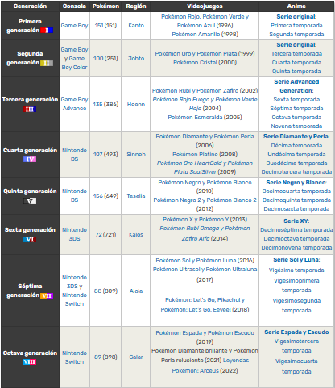

Generaciones de Pokemon
Toda nueva generación de Pokémon reúne mayormente las siguientes características:
Nuevos Pokémon.
La actualización de la lista de Pokémon es el rasgo fundamental y más importante de cada nueva generación. Pokémon se debe a sus monstruos de bolsillo y esta es la novedad que más interés despierta. Aunque no sería correcto decir que un Pokémon pertenece a una generación, pues su aparición no se limita sólo a esta, sino que el nuevo Pokémon estará presente en todas las generaciones subsiguientes, sí se clasifica a los Pokémon en función de la generación en la que debutaron.
Nuevas formas de crianza y evolución.
Algunos Pokémon inéditos pasan a formar parte de cadenas evolutivas de Pokémon existentes, ya sea como preevolución (antes del Pokémon, por medio de la crianza con huevo), como evolución primaria (en Pokémon que antes no poseían evolución previa), o como evolución opcional (en Pokémon con evolución primaria existente, estilo Eevee). Asimismo, se estrenan nuevas formas de evolucionar o formas antiguas pero con alguna nueva variante. Solo la quinta generación es una excepción a esta característica. Por ejemplo, el Pokémon Electabuzz, introducido en la primera generación, adquiere una preevolución en la segunda, Elekid, y una evolución en la cuarta, Electivire. El hecho de que este Pokémon pueda ahora evolucionar y antes no se justifica dentro de los videojuegos por la introducción de mecanismos que antes no existían: Electabuzz no puede evolucionar en ningún videojuego anterior a la cuarta generación porque en estos no se puede conseguir el objeto electrizador, necesario para dicha transformación.
Regiones.
Algo que marca cada generación es también la región en la que se sitúa el desarrollo de la aventura Pokémon. Así, en la primera generación estaba Kanto, luego Johto, después Hoenn, Sinnoh, le sigue Teselia, posteriormente Kalos y finalmente Alola ya en la séptima. Cada territorio incluye personajes principales propios, nuevos profesores Pokémon, historias y enemigos diferentes y nuevos Pokémon iniciales y legendarios. Claro que los remakes (juegos de nuevas generaciones basados en antiguos) traen de vuelta muchas regiones con mejoras en gráfica y efectos. Son ejemplo de ello Pokémon Rojo Fuego y Verde Hoja, videojuegos de la tercera generación recuperan la región de Kanto de los originales, Pokémon Rojo y Verde, y Pokémon Oro HeartGold y Pokémon Plata SoulSilver, de la cuarta generación, que vuelven a la explorar la Johto de la segunda generación, de Pokémon Oro y Plata.
Nuevos movimientos y nuevos tipos elementales.
Al estreno de nuevos Pokémon también se añaden movimientos nuevos y nuevos efectos en combate. Además, en la segunda y sexta generación se modificó el tipo elemental de algunos movimientos y Pokémon (Magnemite/Magneton pasó a ser acero-eléctrico, o Gardevoir a psíquico-hada) así como la incorporación de nuevos tipos: acero y siniestro en la segunda, hada en la sexta.
Actualización de los Pokémon de videojuegos anteriores.
Con cada nueva generación aparecen nuevos rasgos de las especies Pokémon. Estas características son aplicadas a todos los Pokémon, independiente de su generación de estreno. El caso insignia de estas actualizaciones fue la inclusión de las habilidades Pokémon, haciendo aún más diverso el funcionamiento de los combates. En algunas ocasiones, los movimientos que un Pokémon puede aprender han permanecido intactos para algunos Pokémon de generaciones anteriores, mientras que Pokémon Rojo Fuego y Verde Hoja, de la tercera generación, y toda la cuarta generación las modificaron. Con ello, Pokémon de generaciones anteriores pueden aprender ahora más movimientos. Otra novedad menor, que no altera el funcionamiento de los juegos, fue el color, una clasificación de la Pokédex que permite agrupar a las especies según su color predominante.
Nuevos objetos.
Cada generación trae nuevos objetos que se incorporan a los existentes o los reemplazan. Así, aparecen nuevas Poké Balls, nuevos artículos en las tiendas, nuevas máquinas técnicas y máquinas ocultas, etc. A veces se introduce todo un grupo de objetos nuevo, como las bayas en la tercera generación.
Mejoras gráficas y sonoras.
La principal mejora técnica entre una generación y otra es la de los gráficos y el sonido. Con nuevas consolas más potentes y rápidas es posible desarrollar juegos con mejor apariencia y efectos visuales, así como sonido de mayor calidad. Para el anime fue necesario mejorar los diseños originales, que eran bicromáticos (dos colores) y generalmente de combinaciones muy limitadas (solo azules, naranjas, etc.), debido a la poca capacidad de la Game Boy original. El gran salto se produjo entre la segunda y la tercera generación, en la que fue posible ver los Pokémon de generaciones anteriores con gran calidad gráfica y colores casi idénticos al anime. Aunque esta gama de colores era apreciable en consolas de hogar como Nintendo 64, el diseño de los Pokémon se basaba en el juego original. Por ello, el Charizard de Pokémon Stadium tenía un diseño diferente al del anime y más similar al de los juegos de Game Boy. La sexta generación lleva los gráficos a una nueva dimensión, al ser la primera que estrena videojuegos principales en 3D.